600億ドルで、
「開発者の画面」を買う。
2026年6月16日、SpaceX は AIコードエディタ「Cursor」の Anysphere を 600億ドル（約9.5兆円）の全株式交換で買収する最終契約を締結した。これはツールの取得ではない。Compute・Model・Workflow を一本に束ねる——AI開発の「垂直統合」である。

コールオプションの行使、
そして9.5兆円の全株式交換。
本取引は突発ではない。2026年4月に SpaceX が確保していた「600億ドルでの買収権、または100億ドルの提携」というコールオプションの行使である。完全子会社 X67 Inc. が Anysphere を吸収合併し、Cursor は SpaceX 傘下で存続する。鍵は、現金を一切使わず自社株の高い時価総額を通貨にした点だ。
「株式という通貨」で大型買収を可能にした。 SpaceX は現金を温存したまま、高い時価総額をレバレッジに9.5兆円の買収を成立させた。だが100億ドルの解除金は、規制突破に対する強気と、その難易度の高さを同時に物語る。
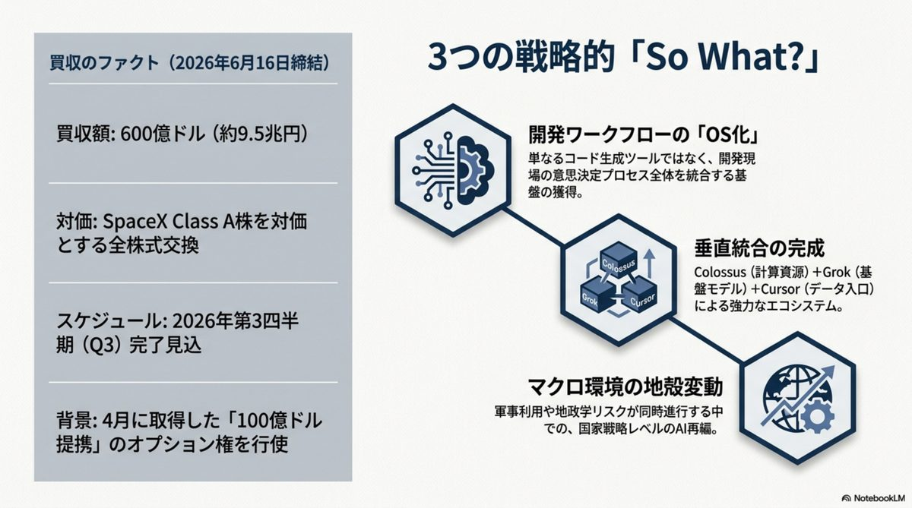
買ったのはエディタではない。
「開発者の画面」だ。
本買収の本質は、エディタというツールの取得ではない。「開発者の作業画面」という戦略レイヤーの支配にある。SpaceX/xAI は次の3要素を一本に束ね、他社に対する構造的優位を築こうとしている——Compute・Model・Workflow の垂直統合だ。
Compute
SpaceX/xAI が保有する巨大インフラ。Cursor 側の計算資源ボトルネックを一気に解消する。
Model
自社開発の基盤モデル。開発者接点から得たデータで、AIコーディング能力を直接強化する。
Workflow
開発者が毎日触るフロントエンド。意思決定プロセスを直接把握できる「知的労働のOS」。
「入り口」を押さえた者が、流れの全てを見る。 エディタは単なる文章入力欄ではない。コードを書くという行為が安価になる中、要件定義やアーキテクチャ判断という「文脈」が流れ込む唯一の場所——それが Cursor だ。SpaceX はその入り口そのものを買った。
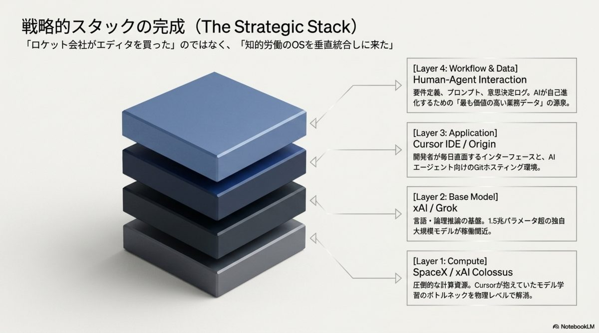
「検証可能なデータ」が、
Grok を自己強化する。
Cursor を通じて得られるデータは、一般的なチャットログとは決定的に違う。「テスト通過」「ビルド成功」という客観的に検証可能な高品質シグナルだ。プロンプト・変更差分（Diff）・テスト結果・レビュー・設計判断のログが、xAI Grok の学習に還流する——これがデータ・フライホイール（自己強化ループ）である。
Prompt × Diff
プロンプト、変更差分、レビューコメント、設計判断——日常の編集が「教師データ」になる。
Test / Build Pass
「テスト通過」「ビルド成功」という事実で裏づくラベル。チャットログより遥かに高純度。
Grok Training
還流したデータが Grok を鍛え、より賢い補完がさらに良質なデータを生む好循環。
「最強の教師データ工場」を手に入れた。 一般的なAIが言葉の海から学ぶのに対し、Cursor は正解／不正解が機械的に判定できるコーディングデータを生み続ける。回せば回すほどモデルが賢くなる——この自己強化ループこそ買収の真の対価だ。
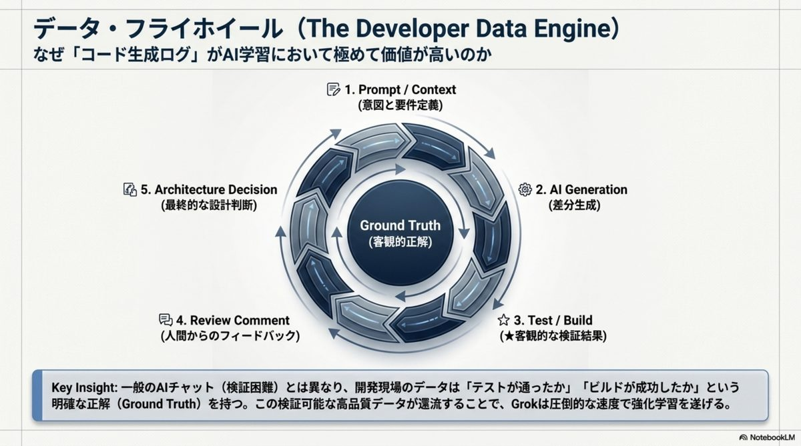
「エージェントが書く時代」の
インフラを、先回りする。
買収発表と前後して、Cursor は野心的なロードマップを公開した。狙いは「人がコードを書く」前提の刷新だ。AIエージェントが並列で大量に作業する世界を見据え、ストレージ・モデル・既存機能の三方向で布石を打っている。
Origin
AIエージェントが1時間に数千回の clone / push をする前提のインフラ。GitHub の代替・補完を狙う。
1.5T モデル
GPT や Opus に匹敵する規模。Grok V9-Medium との関連が指摘され、100k GPU 超で訓練。
Cursor 3.7 / Composer 2.5
Bugbot のレビューが5分→90秒、検出精度+10%。音声入力・Custom Tools も強化。
「人が書く」前提を、インフラごと置きにいく。 Origin は、エージェントが秒間で並列作業する未来を見越した Git の作り直しだ。Cursor はエディタから「AI開発プラットフォーム」へ——買収はその野心に巨大な燃料を注ぐ。
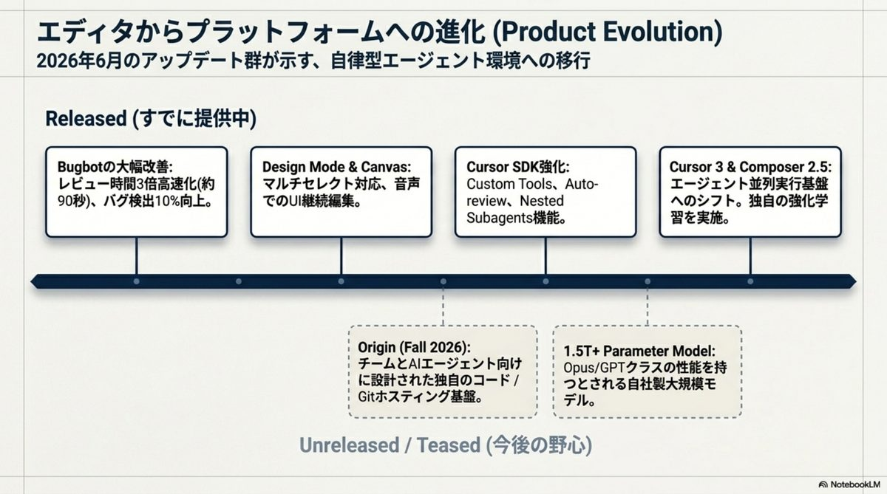
「中立的なフロントエンド」は、
守られるのか。
Cursor は OpenAI も Anthropic も選べる「中立的フロントエンド」として支持されてきた。買収はその前提を揺るがす。企業ユーザーと上級開発者が注視すべき懸念は、大きく3つに整理できる。
モデル中立性
買収後に Grok 等の自社系が優遇されれば、中立性を求めた上級開発者の離反を招く恐れ。
データガバナンス
業務コードが xAI の学習に流用される懸念。Privacy Mode の規約・サブプロセッサ管理の再確認が必須。
規制・独占
HSR法の待機期間と各国承認が条件。不成立なら最大100億$の解除金が発生する。
Grok 専用の実行環境へ
- →開発者接点と意思決定データの直接把握
- →計算資源・モデル・実行環境の最適配分
- →検証可能データによる Grok の継続強化
中立性とプライバシー
- ×OpenAI / Anthropic を自由に選ぶ前提
- ×業務コードが学習に使われない安心感
- ×ベンダー独立な「素のエディタ」像
最大の論点は「中立性の維持」だ。 Cursor がマルチモデル対応の中立フロントエンドであり続けるのか、垂直統合された Grok 専用環境へ変貌するのか——導入企業はいま、契約条項とデータ規約を読み直す局面にある。
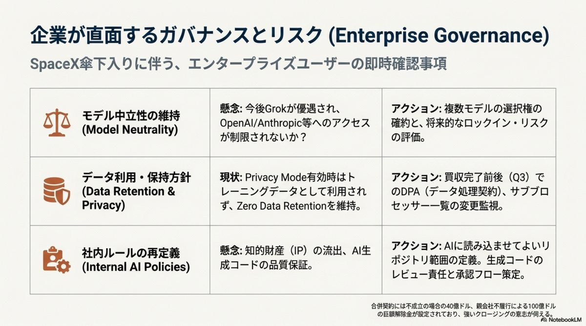
同時進行する、
ガバナンスと地政学の地殻変動。
SpaceX の動向は単独の事件ではない。2026年6月、AI業界全体で「ガバナンス」「軍事利用」「規制」の交錯が加速している。垂直統合の物語は、こうしたマクロ環境の地殻変動の只中で起きている。
「能力」は走り、「統治」は遅れる。 Stanford AI Index 2026 が示すギャップの中で、SpaceX の垂直統合は規制・安全保障・倫理の全てと交差する。買収の承認可否は、このマクロな統治の試金石でもある。
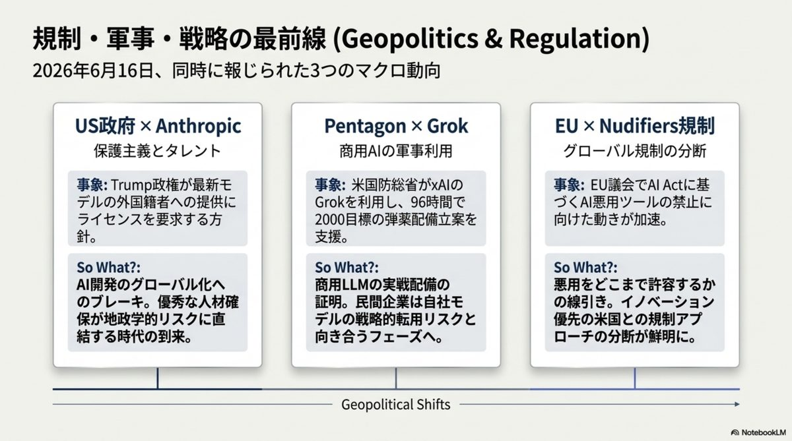
AIコーディングツールは、The SpaceX–Cursor $60B Deal — 2026·06·17
「知的労働のOS」という
主戦場になった。
買収の全貌、原典より。
本スライドの元となったブリーフィング資料の主要図版。取引・戦略・製品・マクロ環境を、原典のビジュアルで俯瞰する。
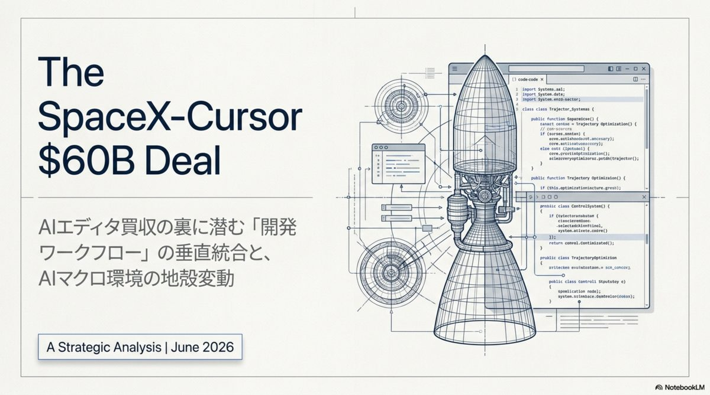
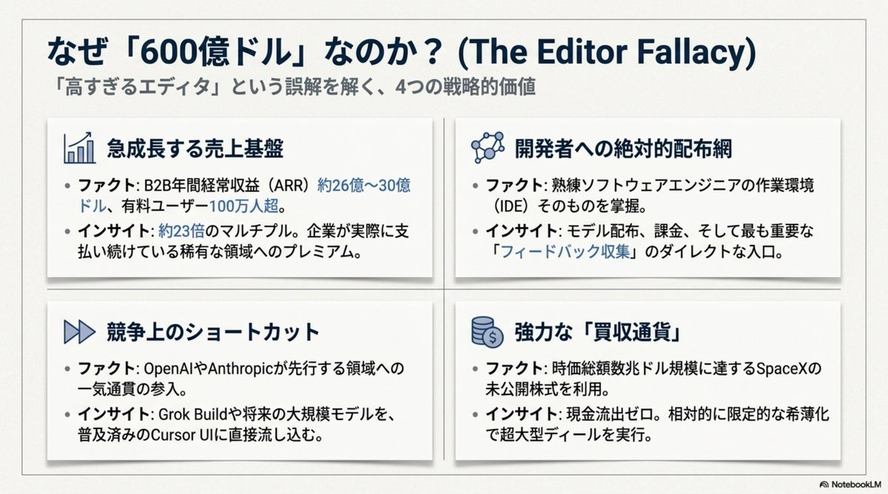
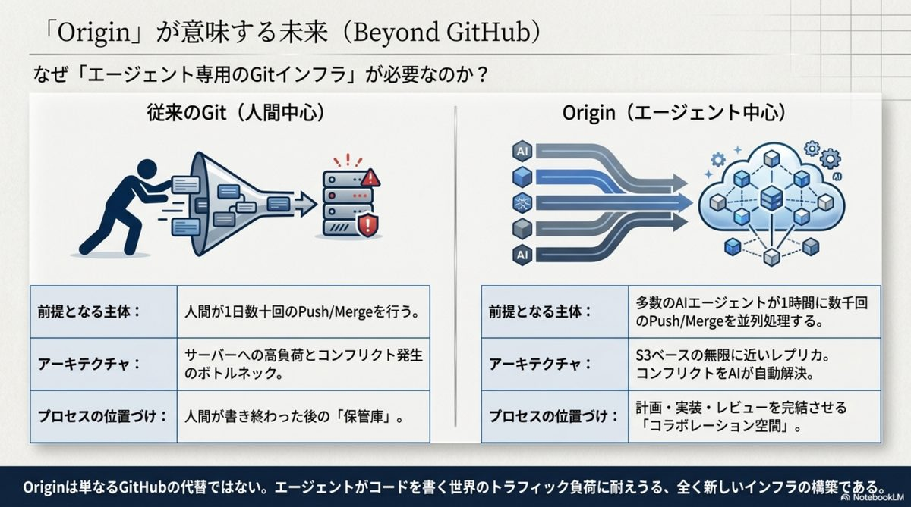
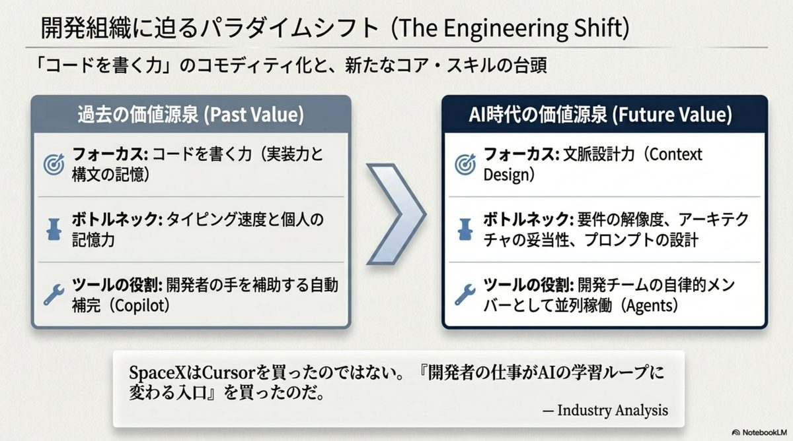
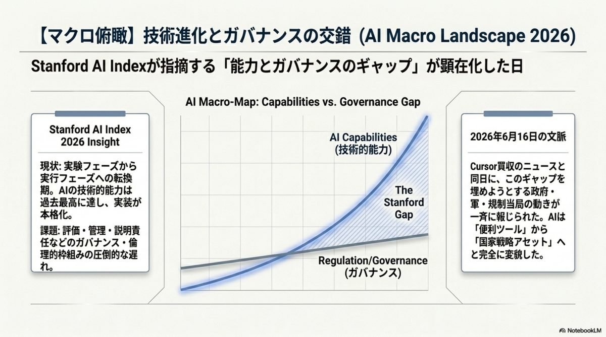
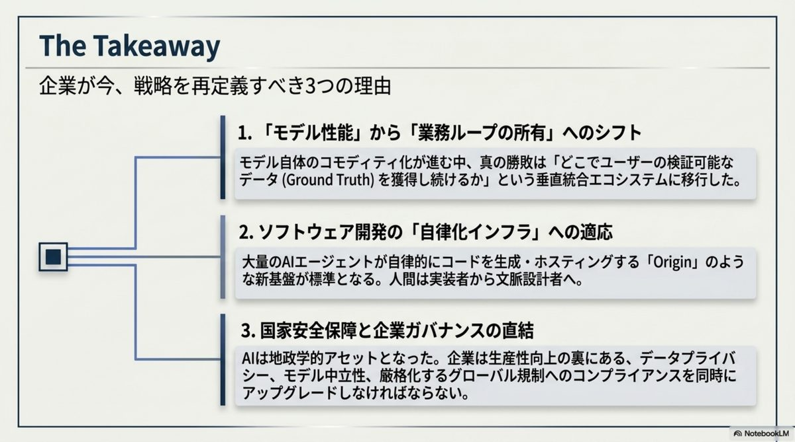
出典と関連リファレンス。
本スライドは SpaceX による Anysphere（Cursor）買収をめぐる解説。買収額・解除金・製品仕様は各一次ソースでの裏取りを推奨する。